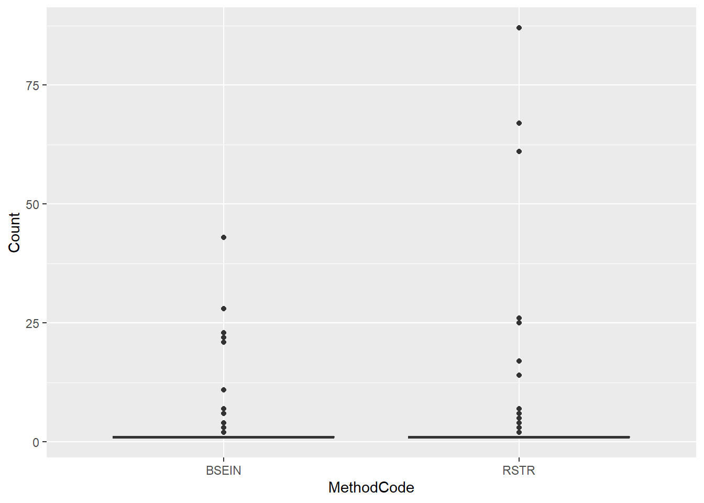
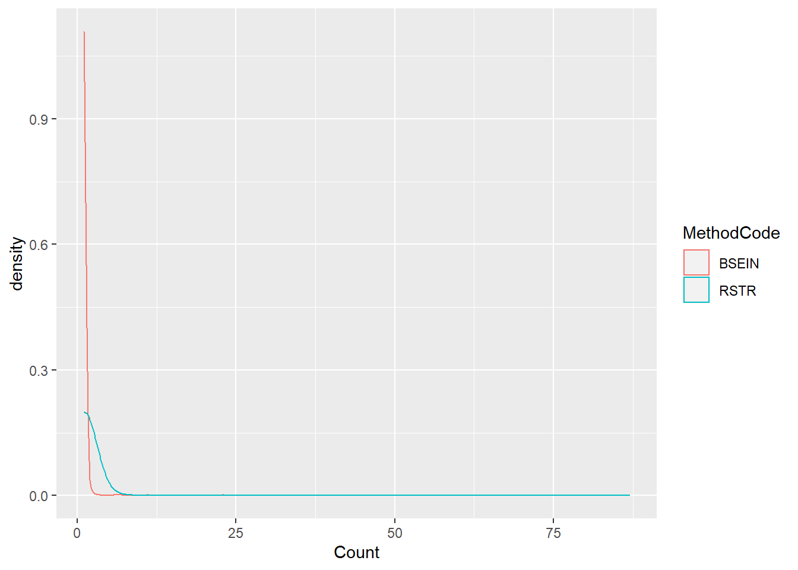
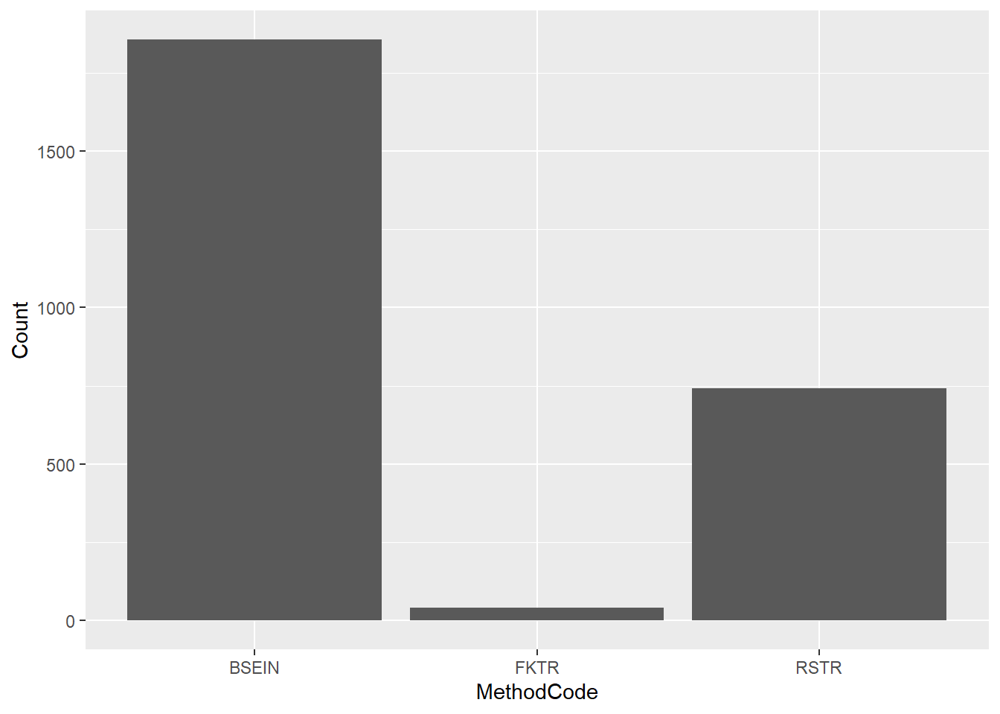

Chapter 8 Basic Stats
fish_yolo_url <- "https://portal.edirepository.org/nis/dataviewer?packageid=edi.233.2&entityid=015e494911cf35c90089ced5a3127334"
fish_data <- readr::read_csv(fish_yolo_url)## Warning: One or more parsing issues, see `problems()` for details## Rows: 182414 Columns: 32## -- Column specification --------------------------------------------------------
## Delimiter: ","
## chr (16): SampleDate, StationCode, MethodCode, GearID, CommonName, Genetica...
## dbl (13): ForkLength, Count, GearConditionCode, WaterTemperature, Secchi, C...
## lgl (2): GeneticID, CWTSample
## time (1): SampleTime##
## i Use `spec()` to retrieve the full column specification for this data.
## i Specify the column types or set `show_col_types = FALSE` to quiet this message.str(fish_data)## spec_tbl_df [182,414 x 32] (S3: spec_tbl_df/tbl_df/tbl/data.frame)
## $ SampleDate : chr [1:182414] "1/16/1998" "1/16/1998" "1/19/1998" "1/19/1998" ...
## $ SampleTime : 'hms' num [1:182414] 14:05:00 15:00:00 12:17:00 12:17:00 ...
## ..- attr(*, "units")= chr "secs"
## $ StationCode : chr [1:182414] "YB" "YB" "YB" "YB" ...
## $ MethodCode : chr [1:182414] "BSEIN" "BSEIN" "FNET" "FNET" ...
## $ GearID : chr [1:182414] "SEIN50" "SEIN50" "FKNT" "FKNT" ...
## $ CommonName : chr [1:182414] "Threadfin Shad" "Inland Silverside" "Threadfin Shad" "Chinook Salmon" ...
## $ GeneticallyConfirmed: chr [1:182414] "No" "No" "No" "No" ...
## $ GeneticID : logi [1:182414] NA NA NA NA NA NA ...
## $ Field_ID_CommonName : chr [1:182414] "Threadfin Shad" "Inland Silverside" "Threadfin Shad" "Chinook Salmon" ...
## $ ForkLength : num [1:182414] 90 73 88 38 71 62 58 50 81 49 ...
## $ Count : num [1:182414] 1 1 1 1 1 1 1 1 1 1 ...
## $ FishSex : chr [1:182414] NA NA NA NA ...
## $ Race : chr [1:182414] "n/p" "n/p" "n/p" "n/p" ...
## $ MarkCode : chr [1:182414] "n/p" "n/p" "n/p" "n/p" ...
## $ CWTSample : logi [1:182414] FALSE FALSE FALSE FALSE FALSE FALSE ...
## $ FishTagID : chr [1:182414] NA NA NA NA ...
## $ StageCode : chr [1:182414] "n/p" "n/p" "n/p" "CHN_P" ...
## $ Dead : chr [1:182414] "No" "No" "No" "No" ...
## $ GearConditionCode : num [1:182414] 3 3 1 1 1 1 1 1 1 1 ...
## $ WeatherCode : chr [1:182414] "CLD" "CLD" "RAN" "RAN" ...
## $ WaterTemperature : num [1:182414] 11.7 11.7 11.1 11.1 11.1 ...
## $ Secchi : num [1:182414] NA NA 0.16 0.16 0.07 ...
## $ Conductivity : num [1:182414] NA NA NA NA NA NA NA NA NA NA ...
## $ SpCnd : num [1:182414] NA NA NA NA NA NA NA NA NA NA ...
## $ DO : num [1:182414] NA NA NA NA NA NA NA NA NA NA ...
## $ pH : num [1:182414] NA NA NA NA NA NA NA NA NA NA ...
## $ Turbidity : num [1:182414] NA NA NA NA NA NA NA NA NA NA ...
## $ SubstrateCode : chr [1:182414] "VG" "MD" NA NA ...
## $ Tide : chr [1:182414] NA NA NA NA ...
## $ VolumeSeined : num [1:182414] NA NA NA NA NA NA NA NA NA NA ...
## $ Latitude : num [1:182414] 38.6 38.6 NA NA NA ...
## $ Longitude : num [1:182414] -122 -122 NA NA NA ...
## - attr(*, "spec")=
## .. cols(
## .. SampleDate = col_character(),
## .. SampleTime = col_time(format = ""),
## .. StationCode = col_character(),
## .. MethodCode = col_character(),
## .. GearID = col_character(),
## .. CommonName = col_character(),
## .. GeneticallyConfirmed = col_character(),
## .. GeneticID = col_logical(),
## .. Field_ID_CommonName = col_character(),
## .. ForkLength = col_double(),
## .. Count = col_double(),
## .. FishSex = col_character(),
## .. Race = col_character(),
## .. MarkCode = col_character(),
## .. CWTSample = col_logical(),
## .. FishTagID = col_character(),
## .. StageCode = col_character(),
## .. Dead = col_character(),
## .. GearConditionCode = col_double(),
## .. WeatherCode = col_character(),
## .. WaterTemperature = col_double(),
## .. Secchi = col_double(),
## .. Conductivity = col_double(),
## .. SpCnd = col_double(),
## .. DO = col_double(),
## .. pH = col_double(),
## .. Turbidity = col_double(),
## .. SubstrateCode = col_character(),
## .. Tide = col_character(),
## .. VolumeSeined = col_double(),
## .. Latitude = col_double(),
## .. Longitude = col_double()
## .. )
## - attr(*, "problems")=<externalptr>fish_lmb <- fish_data %>% filter(CommonName == "Largemouth Bass")
fish_lmb2 <- fish_lmb %>% filter(MethodCode %in% c("BSEIN", "RSTR"))8.1 Parametric Stats
8.1.1 T-test
### 1. Independent-samples t-test: Is there a difference in LMB Count by Method? ----------------
(lmb.ttest <- t.test(fish_lmb2$Count~fish_lmb2$MethodCode)) # not significant##
## Welch Two Sample t-test
##
## data: fish_lmb2$Count by fish_lmb2$MethodCode
## t = -2.4938, df = 372.14, p-value = 0.01307
## alternative hypothesis: true difference in means between group BSEIN and group RSTR is not equal to 0
## 95 percent confidence interval:
## -1.6055186 -0.1898624
## sample estimates:
## mean in group BSEIN mean in group RSTR
## 1.146387 2.044077# Plot
ggplot(fish_lmb2, aes(x = MethodCode, y = Count)) + geom_boxplot()
ggplot(fish_lmb2, aes(x = Count, color = MethodCode)) + geom_density()
ggplot(fish_lmb, aes(x = MethodCode, y = Count)) + geom_col() # This works best for data with lots of zeros
### 2. Paired t-test: Does a treatment cause a difference? Did Action Phase alter Count of LMB? -------------
(lmb.ttest2 <- t.test(fish_lmb2$Count ~ fish_lmb2$MethodCode)) # significant##
## Welch Two Sample t-test
##
## data: fish_lmb2$Count by fish_lmb2$MethodCode
## t = -2.4938, df = 372.14, p-value = 0.01307
## alternative hypothesis: true difference in means between group BSEIN and group RSTR is not equal to 0
## 95 percent confidence interval:
## -1.6055186 -0.1898624
## sample estimates:
## mean in group BSEIN mean in group RSTR
## 1.146387 2.044077# Plot: Figure out the direction of the trend
# ggplot(fish_lmb2, aes(x = ActionPhase, y = Count)) + geom_boxplot()
# ggplot(fish_lmb2, aes(x = Count, color = ActionPhase)) + geom_density()
# ggplot(fish_lmb2, aes(x = ActionPhase, y = Count)) + geom_col() # This works best for data with lots of zeros
### 3. One-sample t-test: Is the Count greater than 0? ---------------------------------------
(lmb.ttest3 <- t.test(fish_lmb2$Count, mu = 0)) # p < 0.05, Yes, it is##
## One Sample t-test
##
## data: fish_lmb2$Count
## t = 17.633, df = 1981, p-value < 2.2e-16
## alternative hypothesis: true mean is not equal to 0
## 95 percent confidence interval:
## 1.165012 1.456583
## sample estimates:
## mean of x
## 1.310797